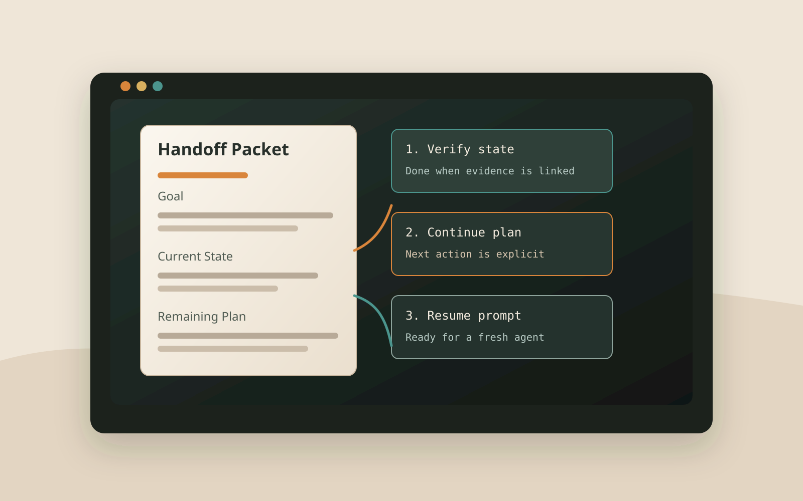

Fix the target
Identify who resumes, what they should focus on, and what success means.

Agent state, captured for restart
Save the current task state, evidence, risks, and exact remaining plan so a later agent can continue from the packet alone.
The skill treats a handoff as an engineering artifact, not a chat summary. Every step ends with a checkable state.
Identify who resumes, what they should focus on, and what success means.
Record durable state: paths, commands, artifacts, decisions, and failures.
Write ordered next steps with files, commands, risks, and done criteria.
Read the packet like a fresh agent and close any missing restart context.
It links to artifacts instead of pasting bulk context and calls out what is unknown, blocked, or sensitive.
# Handoff: assignment deploy fix Generated: 2026-07-02 08:40 KST Recipient: another coding agent Focus: finish verification first ## Current State - Workspace: /path/to/repo - Branch: feature/handoff - Active services: none ## Remaining Plan 1. Run the focused test. Done when the target case passes. 2. Review the changed file. Done when unrelated edits are absent.
Copy the skill into your global agent skills folder, then trigger it with prompts like "handoff this task" or "save state so I can resume later".
Use the repository script from a local clone.
./install.sh
Run the local validation checks before publishing changes.
npm test